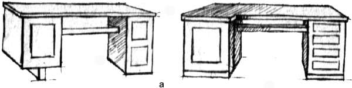
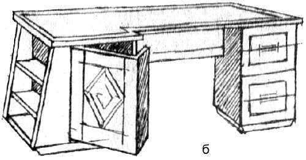
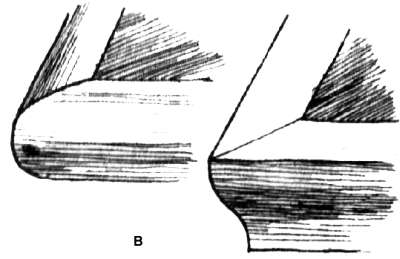
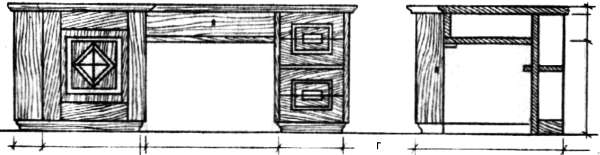
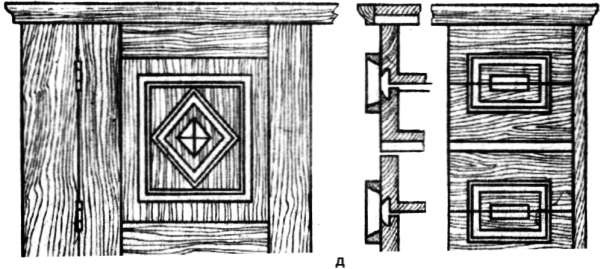

Общие замечания к проектированию предметов мебели.

В современном индустриальном обществе предметы мебели разрабатывают проектировщики, архитекторы или дизайнеры, а реализацией проектов занимаются другие специалисты – столяры.
В нашем случае все – и разработка проекта, и его реализация – выполняется одним человеком, задумавшим оформить интерьер своей квартиры или сделать отдельное мебельное изделие собственными силами. Создание проекта любого предмета, в том числе предмета мебели, представляет собой творческий процесс, в котором увязываются все характеристики и факторы, так или иначе влияющие на выполнение задуманного в натуре и придающие предмету необходимые эстетические качества. Надо иметь в виду, что неумеренная оценка отдельных этапов создания предмета мебели, преувеличение их значимости в конечном итоге часто приводит к потере предметом гармоничности и других важных качеств. Так, желание максимально упростить технологию обработки деревянных деталей приведет к использованию брусковых деталей, придаст изделию угловатость, жесткость и невыразительность формы.
Можно долго предостерегать читателя относительно возможных неудач, но целесообразнее, видимо, сосредоточить внимание на том, что и как надо делать. Композиционный процесс, являющийся основной частью процесса проектирования, развивается всегда в одной и той же последовательности. Сначала изучается и оценивается устройство проектируемого предмета. Оценка всегда должна базироваться на детальном изучении и освоении так называемой функции вещи.
Например, намереваясь проектировать кресло, следует уяснить, для чего именно оно предназначено. Речь в данном случае идет о том, что рабочее кресло подвергается иным воздействиям и имеет иную функцию, нежели кресло в приемной столоначальника.
В рабочем кресле человек должен иметь возможность откинуться на спинку для отдыха, облокотиться на подлокотники. Кресло не должно быть чрезмерно мягким, тесным или просторным. С него должно быть удобно вставать, на него должно быть удобно и садиться. Форма и профиль сидения должны давать возможность долго сидеть без усталости. А кресло в приемной должно быть просторным и мягким. Такое кресло обычно ставят так, чтобы человек мог садиться и вставать, не двигая его.
Когда эта «мелочи» уточнены, перечисленные функциональные особенности предмета рассматриваются с точки зрения конструкции. Главная задача: обеспечить прочность при любых формах эксплуатационных нагрузок и длительную надежность в работе. Так, особенности рабочего кресла, очевидно, потребуют такого устройства подлокотников, которое препятствовало бы расшатыванию их при разных нагрузках: опоре на них, поднимании кресла и передвижения по полу. Если все это учесть, станет очевидным, что шкантовое соединение в этой детали не будет надежным, лучше использовать глухой шип двойной или тройной, причем достаточно глубокий. Этот вывод влияет в свою очередь на выбор сечения, материала изделия и клея.
Необходимость противостоять горизонтальным усилиям потребует либо широких толстых царг, либо установки дополнительных проножек и подкосов, обеспечивающих жесткость конструктивного узла, либо использования дополнительных металлических креплений.
На этом этапе конструкция изделия может выглядеть как линейная схема или каркас, в которых каждый элемент изображается на бумаге двойными или одинарными линиями, соединенными между собой и отображающими форму изделия. Места неразъемных соединений обозначают окружностями, диаметр которых будет тем больше, чем более прочным это соединение должно быть. Так, наибольшей прочности потребует соединение передних ножек и царг в том же кресле или передних стенок ящиков с боковыми в выдвижных ящиках столов.
Дальнейшим этапом работы будет создание общей структуры изделия. Как уже говорилось, структура – это система видимых и оцениваемых глазом элементов, связанных в общее целое, и создающих общую форму изделия.
Структурные элементы в изделии должны соответствовать положению конструктивных деталей, помимо этого в структуру входят также и декоративные части, которые рабочих нагрузок не воспринимают и к конструкции не относятся.
На этом этапе основная задача – создание гармоничного сочетания всех видимых элементов между собой, определение пропорций всех деталей, входящих в общую форму, и придание этой форме цельности.
Подчеркнем: структура не должна противоречить конструкции. Если по конструктивным соображениям деталь должна иметь определенную длину и толщину, то структурно обработанный этот же элемент не может быть тоньше: он может быть таким же или более толстым.
Прорисовывают контуры деталей, их сопряжения, изгибы, толщины. Так, ножки, по конструктивной схеме прямые, могут получить изгиб, выбранный с учетом возможного скалывания по волокнам, увеличение толщины в местах соединений с царгами, плавный переход к ним. В подлокотнике кресла прорисовывается форма его окончания, длина свеса относительно стойки и т. п.
Законченный структурный проект может быть представлен как в контурном рисунке-чертеже, так и в макете.
На этой стадии разработки проекта конструктор уступает место художнику. Здесь проявляется умение гармонизации формы, соблюдения пропорций, правильного учета прочностных и декоративных характеристик материала.
Структурная проработка дает общую форму. В ней нет еще конкретных знаков художественной выразительности. Макет кресла мало говорит о точном, буквальном назначении предмета, о его месте в реальной жизни и о человеке, для которого это кресло предназначено. Кроме того, структурная проработка лишь намечает декоративные элементы предмета, не определяя их точную форму. При рассмотрении структурного проекта или макета можно представлять себе как темное, так и светлое дерево, обивку разного цвета и фактуры, различный характер отделки поверхности.
При создании структурной части проекта приходится учитывать возможности технологического процесса обработки деревянных или иных элементов. Наличие тех или иных приспособлений и станков или их отсутствие будет влиять на выбор структурной формы предмета или его деталей. Нет смысла ломать себе голову, проектируя то, что в домашних условиях невозможно сделать.
Поскольку большая часть работы в домашних условиях будет выполняться вручную, можно не бояться деталей, требующих значительной доли ручного труда, как это принято на фабриках. Именно ручной труд необходим для придания мебельному изделию художественной выразительности. Та же криволинейная ножка может быть выполнена на копировальном станке сразу с чистой поверхностью или выпилена с последующей ручной обработкой.
Финальная стадия работы над проектом наиболее сложная и ответственная: детализация формы, в которой надо проявить максимум художественного чутья и знаний, понимания особенностей конкретного материала, а также целого ряда технических вопросов, связанных с окончательной обработкой и отделкой предмета. На этом этапе главной задачей является окончательная проработка формы всех деталей со всех сторон с учетом текстуры и цвета дерева и характера отделки.
Работу начинают с выявления тектоники предмета, решаемой с учетом использования направлений волокон дерева в конструктивно работающих деталях. Только тектоника придает изделию убедительность построения и зрительную надежность. Современные способы образования деревянной поверхности, когда широко используется декоративная отделка шпоном, не допускают поперечное оклеивание в деталях, работающих на изгиб. При необходимости этот способ отделки допускается в изгибаемых деталях лишь тогда, когда рисунок текстуры шпона будет сделан нарочито декоративным и к действительной работе детали не имеющим отношения. При этом все же желательно оставлять хотя бы намек на рабочее направление волокон основы, находящейся под облицовкой, например, пропуская по ребру долевую жилку.
Когда проработка тектоники завершена, приступают к выполнению декоративных элементов, которое заключается в поверхностной обработке деталей, выявляющей текстуру материала (или скрывающей ее при неудовлетворительном впечатлении), выявлении фактуры поверхности и, наконец, в применении цвета и объема (рельефа) в отделке.
По силе воздействия текстура (фактура), цвет и объем являются последовательно возрастающими художественными категории. Однако при неравномерном количестве в том же кресле, например, цвет обивки, может композиционно преобладать над небольшой по размеру объемно-рельефной частью, хотя по силе выразительности цвет уступает ему.
Очень важен комплексный подход к выбору декоративных средств на окончательном этапе проектирования. Перечисленные выше приемы декорирования находятся в указанной последовательности, взятые сами по себе, отвлеченно. Но в совокупности они могут усиливать друг друга, а могут и снизить общий уровень впечатления от декоративной обработки.
Как отмечалось, мелкая резьба в рассеянно-сосудистых породах при ярко выраженной слоистости и при очень светлой мягкой древесине невыразительна. Для нее лучше брать мелкослойную равномерно окрашенную древесину естественного цвета или прибегнуть к искусственному выравниванию контрастов текстуры морением или протравливанием. Глянцевое покрытие резьбы менее выразительно, чем матовое восковое, дающее наиболее богатое впечатление, но с другой стороны, то же кресло не рекомендуется покрывать воском – составом значительно менее прочным, чем лак.
При использовании древесины с непригодной для мелкой резьбы текстурой, надо применить другой композиционный прием, например, взяв текстуру в качестве основного декоративного момента или применив крупную геометрическую резьбу.
Примерно также надо поступать и при выборе цвета обивки и ее фактуры. Крупная фактура обладает большей выразительностью. Не следует менять такую обивку в предмете, в котором деревянная часть сделана тонко и изящно. Обивка такого, рода, соединенная с цветом, «убьет» столярную работу.
По ценности качество обивочного материала должно соответствовать ценности дерева и количеству труда, затраченного на изделие. Этим объясняется применение кожи для обивки мебельных предметов из ценных пород дерева. Но как только обработка деталей этого изделия приобретет особо художественный индивидуальный характер (резьба, точеные вставки), выявляющий количество затраченного труда, простая кожа становится невыразительной, в этом случае приходится вводить тиснение кожи или применять штофную обивку.
Такая последовательность работы над проектом является обязательной. Пропустить какой-то этап нельзя. Отличия могут быть лишь в затратах времени на тот или иной этап работы. Например, опыт в создании прочных конструктивных соединений даст возможность от этапа освоения устройства перейти непосредственно к структурной части проекта. Но прорисовке деталей в структуре всегда будет предшествовать мысленная проработка узлов прочности и формы скреплений.
Само определение «деревянная мебель столярной работы» уже показывает, какие ограничения наложены на человека, занимающегося компоновкой такого мебельного предмета. Поэтому всякое прибавление ограничений (например, технологических, материальных) к уже имеющимся усложняет работу над композицией и в конечном итоге может приводит к схематизму, бедности решения и невыразительности предмета. Чтобы не сковывать простор творческой фантазии, не бойтесь добавлять условия, усложняющие работу. Не надо бояться использовать для украшений резьбу, металлическое литье или протяжку и т. п. Эти добавления, примененные с тактом и должной художественной мерой, только повысят качество проекта и самого предмета.
Рассмотрим работу над проектом письменного стола. Предположим, стол должен вмещать много бумаг, поверхность стола должна быть такой, чтобы на нем можно было разворачивать чертежи. Стол должен быть тумбовым, широким, длинным. Материал: шпон из древесины ореха, массив из древесины березы, сосны, ели.





Рис. 43. Этапы работы над проектом: а – объемные зарисовки вариантов общего вида; б – объемные зарисовки основных блоков; в – проработка деталей; г – чертежи общего вида; д – чертежи разрезов
Практичнее будет сделать стол темного цвета. Если потребуются массивные профильные детали, имитирующие массив ореха, их лучше выполнить темными. Имитацию в этом случае сделать легче. Исходя из композиционной схемы, определяют места повышенной декоративной обработки.
Перед началом создания собственно проектного чертежа обычно выполняют зарисовки аналогичных предметов для лучшего уяснения масштабности и размеров предмета, а затем – рисунки, выражающие идею вещи в общем виде. Первые рисунки, выполненные схематично, обогащают деталями, прорисовкой отдельных узлов общей структуры. Эти рисунки выполняют в аксонометрии или ортогональной проекции, показывающих стол с разных сторон. При этом проверяют форму крышки, ее отбортовку, примыкания крышки к тумбам, характер сторон, ящичных тумб. Как только характер стола в целом будет найден, выполняют его чертеж в масштабе 1:10, а также необходимые разрезы. Чертеж является черновым, рабочим, в него можно вносить поправки.
Единственный размер, который не зависит от вас, это сама высота стола от уровня пола. Она не может превышать 80 см и быть меньше 68 см, но именно в этом пределе ее надо выбрать, если, конечно, нет особых причин для создания стола иной высоты.
Затем, сняв с чертежа кальку, прорабатывают отдельные детали. Найденные результаты следует закрепить тушью.
С рабочего эскиза изображение перечерчивают на планшет, и чертеж раскрашивают. В соответствии с эскизом необходимо разработать чертежи фрагментов изделия в масштабе 1:2 или 1:4. Если изделие украшено сложным орнаментом, масштаб фрагмента должен быть более крупным (1:2). По такому фрагменту выполняют два вида работы: изготовляют рабочие чертежи на внешние детали и конструкцию и прорабатывают основу для шаблона декоративной части (в тех случаях, когда предусматривается резьба, точение, маркетри).
Подбирают фурнитуру и обозначают места ее расположения. Шаблоны изготовляют в натуральную величину в том случае, если детали имеют переменное сечение, криволинейные или ломаные, выполнены из массива древесины. Таким образом, комплект чертежей письменного стола будет состоять из эскиза в масштабе 1:10 с видами спереди и сбоку (если боковины тумб симметричны), виде сверху и трех разрезов – поперек через тумбы и середину стола и вдоль по крышке стола через обе тумбы; фрагмента тумбы в масштабе 1:2 – 1:4, показывающего четыре стороны тумбы (один вид изнутри из-под крышки), и двух разрезов через тумбу в том же масштабе; шаблонов, выполненных в натуральную величину.
На этом собственно кончается композиционное проектирование. Для большей наглядности его иногда дополняют макетом, на котором можно проверить те или иные сочетания форм деталей, уточнить необходимый рельеф поверхности и пр.
Читателю может показаться излишним изготовление такого количества чертежей, если изделие будет изготовлено в одном экземпляре и тем самым человеком, который создал проект изделия.
В каких-то случаях, это действительно излишне. Но если у читателя нет опыта подобной работы, чертежи помогут лучше видеть будущее изделие и избежать ошибок, исправить которые в последующем будет просто невозможно.
Эскизный проект является основой последующего рабочего проекта, в котором производится расчленение предмета на составные части с полным определением их размеров и формы, связанной как с внешней видимой стороны, так и с внутренней скрытой, определяемой конструкцией, характером соединений и скреп. Все разъемные блоки предмета (в данном случае крышка, ящики, тумбы) разрабатываются отдельно. Обычно все его бруски и детали нумеруют. Составляют сводный рисунок всех брусков, в котором отмечают номер каждого и их количество.
Например, ящик, состоящий из четырех стенок с днищем, будет иметь пять деталей; крышка стола (прямоугольная) – три: собственно крышку, две длинные обвязки борта и две короткие обвязки. При более сложной крышке появится большее количество деталей.